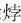

前面把朱棣归在暴君之列，而他一生作为，也确当得起这称号，所以我们并不打算收回这样的评价。
但其实这并不是他的真正特色；仅
仅给他这样的评价，有点委屈他了，抑或把他过于简单化了。
暴君屡见不鲜，朱棣却只有一个。
一般暴君，自有一腔桀骜之气，唯我可负天下，为所欲为，把恶做到淋漓尽致；他们对于自己的暴虐从不掩饰，一览无余；固然令人切齿，却也不失直爽。这种暴君，包括夏桀、商纣、秦皇、隋炀和北朝后赵的石虎[179]之流。
按我们通常的经验，暴君不屑于讲仁义道德。而朱棣作为暴君，残暴虽不逊于同类，却具有其他暴君都没有的特点：满口仁义道德。这是他在古往今来暴君中岐嶷不凡之处，也是一种真正的明代特色。
明代已是帝制社会晚期。这概念，一面意味着趋于老迈和衰落，一面也意味着进入稳固和成熟，早期的野朴和中期的蓬勃都渐渐化于循规蹈矩的凝重。界限出现在宋代。宋及以后，倘将短暂插足而未肯融入中原文明的元代除外，则可看到这七八百年的历史，秦汉的霸气，魏晋的放荡，隋唐的开阔，俱往矣；代之而来的，是缜密和刻板。这也是二千年帝制中儒家伦理真正树立起权威的时候。其间，明代尤具承上启下之作用，它一面将宋儒所开辟的理学从元蒙之搁弃中恢复，一面加以发扬光大，结合到本朝的政治法律制度、文化建设和世俗生活准则之中；后世称“宋明理学”，若单论创言立说和对学理的贡献，明不如宋，然而把“知”转化为“行”，实践地把理学原理深入融于体制和社会生活规范，明又超过了宋。正是明代所起的中间作用，才有按照儒家尺度最平稳运行的典范般的清代——它在制度上悉遵明制，却能够吸取明代的若干教训，从而在十九世纪之前，把儒家伦理的政治能量发挥到极致。[180]
野蛮的冲动虽然仍有，却面临业已不可动摇的儒家道德权威的巨大压力，而不得不有所自我抑制。朱元璋很典型，他天性之中明显有强烈的暴力倾向，并在具体事件和局部行为上时有流露，但总体上他却能够了解接受儒家仁爱为君理念的意义。还有起自蛮荒的满人，起初他们的表现，跟以往一入中原唯知杀戮与蹂躏的其他蛮族没有两样，然而当天下既定、切实实行统治的时候，却意识到收敛野性、洗心革面的必要，转而成为有史以来在中原执掌政权的最理性之异族。总之，无所顾忌、赤裸裸、将破坏性宣泄殆尽的暴政，宋、明、清三代并不存在。
唯一有潜力发展成“暗黑破坏神”式暴君的，便是朱棣。从他做下的一些事，完全可以看出他在这一方面的罕见禀赋。永乐十九年，仅仅为着一个宠妃之死，朱棣即悍然在后宫实施一次惨绝人寰的大屠杀。事因朝鲜进贡的权妃而起，这权氏进宫后很受朱棣喜欢，渐教她掌管六宫之事，难免为别的妃嫔所嫉。永乐八年一天，权妃突然死了，但当时并未引出什么事。到了永乐十二年，忽然抖露出权妃当时是被另一朝鲜宫人吕美人下毒害死的说法——其实这纯属后宫龃龉导致的诬陷——朱棣怒极，兽性大发，命人将被冤枉的吕美人用烙铁足足烙了一个月，方才处死，另外还处死宫女数百人；又坚持要求朝鲜国王杀吕氏满门；与此同时，为了泄忿，“将赴征时逃军及从军士之妻妾奸他夫者”，共计一百多人，全部杀掉，每天杀人时他都亲临现场观看。事情并未到此为止。不久，诬告吕美人的宫人吕氏（也姓吕，不过是中国人），还有另一宫人鱼氏，曾因难耐寂寞而与宦官私通，朱棣似有觉察，吕、鱼感到事情败露，双双自尽；吕、鱼之死，令当年权氏旧案复发，朱棣大行拷掠，宫婢不堪受刑往往信口胡言以求暂解，结果刑逼之下，生出所谓宫中存在谋杀朱棣阴谋之说，一旦如此，进而辗转攀连，牵及宫女二千八百人——这二千八百名宫女全被杀光，而且个个以剐刑处死，每剐一人朱棣均亲自监刑。据说，有宫女受剐刑之时，破口大骂朱棣：“自家衰阳，故私年少寺人（与年轻宦官私通），何咎之有？”[181]看来以“尚武”闻名的永乐大帝，作为男人其实并不值得骄傲，难怪他如此丧心病狂。
累计起来，从永乐十二年起，至永乐十九年止，因为权氏之死而引起的这件惨剧，朱棣前后杀人逾三千。
此事足以证明，朱棣其人的残暴，不在后赵皇帝石虎之下。但是，类似这样的行径，我们在《太宗实录》里却找不到一点踪迹，全部被掩盖起来。这场后宫大屠杀，所以为后世知晓，仅仅由于当时宫中有个名唤金黑的朝鲜籍乳娘，她在朱棣死后，得返朝鲜，将全部经过对朝鲜国王做了汇报，然后载于《李朝实录》。
金黑还报告说，朱棣死后，共有三十余名妃嫔，被强令殉葬；从金黑所提及的人名看，多为朱棣生前所宠爱的女人。这些女人被领入一间大殿，事先已有许多小床放在那里，她们被扶上小床，将脖颈伸入绳套，随即撤去小床……金黑描述说，朱棣的宠姬韩氏，这位与之母女相称的朝鲜美人，临死之际哭叫道：“娘，吾去！娘，吾去……”“语未竟，旁有宦者去床”[182]，其状甚惨。殉葬的旨意，究系朱棣早有吩咐，还是出于其子仁宗朱高炽，不明。但细察此事的风格，兼以朱棣一贯的为人、性格、心理来推测，十有八九是朱棣的安排。汉代以来，殉葬在中国已经废止，以宫人殉大行皇帝之事鲜有所闻；一般做法是遣散或在宫中养起来，“白头宫女在，闲坐说玄宗”是比较典型的情形。朱棣能在十五世纪有此倒行逆施，一是强烈而可怕的独占心和嫉妒心作祟，再有，只能说此人过于毒刻，天良丧尽。
幸赖外国史志，这些本已淹埋的史实多少年后才重见天日。由此不禁令人深疑，朱棣一生究竟还有哪些暴行已经石沉大海，被官方史志抹煞得一干二净？
这恶贯满盈的统治者，若询之今人，恐怕却没有几人认为他是大暴君。原因何在？除了他本人和明代官方竭力消灭那些罪恶证据，除了他搞过很多迷惑后人的“形象工程”，还有一个重要原因，即他曾用大量言论把自己打扮成道德高尚的贤明君主。但更可悲的是，今天许许多多、泛滥成灾、不负责任的通俗化帝王传记作品，对朱棣这些漂亮话居然连最基本的“听其言，观其行”的意识都没有，一味采信，把它们用作刻画朱棣形象的材料，影响相当坏。
就在他血洗后宫过程中，永乐十九年四月八日，紫禁城三大殿忽为雷所击中，引燃天火，新皇宫这耗费巨大人力物力的最主要建筑，落成仅三个月，即化为灰烬，直到正统年间才由英宗朱祁镇修复。三大殿毁于雷火，曾给未及被杀的人们带来一丝希望：“宫内皆喜，以为帝必惧天变，止诛戮。”[183]朱棣的确于第二天就下了一道罪己诏，里面说对于三殿之灾“朕心惶惧，莫知所措”，随后在内外政及自我道德修养等所有方面，反躬自问；又极诚恳地表示：“尔文武群臣受朕委任，休戚与共，朕所行果有不当，宜条陈无隐，庶图悛改，以回天意。”[184]可实际上呢？《李朝实录》指出：“帝不以为戒，恣行诛戮，无异平日。”这正是朱棣一贯的风格：好话说尽，坏事做绝。公开说的是一套，实际做的是另一套。他可以一面下罪己诏，满是悔过之意，一面依旧屠杀不辍，“无异平日”。
这才是真实的朱棣。
朱棣之生也晚。以他的禀质，早生数百年，当不失为历来暴君头把交椅的有力竞争者。但，前面所说帝制晚期特色限制了他，使之不能尽情发挥。
过去，讲到宋以来礼教（道学）对人的束缚，多注意的是读书人和士绅所受的影响，小说家也以此为题材，加以渲染，留下很多精彩故事，所以现在一谈起礼教的虚伪，我们脑中浮现的尽是严贡生一类形象。
其实皇帝也一样。到了明代，做皇帝愈来愈不“自由”，道学的各种清规戒律如影随形，令他们不胜烦恼，却无可奈何。终明之世，几乎每个皇帝都不得不以自己的方式去回答道学的提问。有朱元璋的方式，朱允炆的方式，朱祐樘（明孝宗）的方式，也有朱棣的方式，也有朱厚照（明武宗）的方式，朱厚熜（明世宗）的方式。各不相同，但都必须和道学打交道，做出回应，表明态度，而无法置之不理，其情形则无奇不有。像朱厚照，生性与道学相左，又不惯隐忍，索性破罐子破摔，以沦为市井无赖的方式来达到反叛目的。朱厚熜也很有意思，早期他极在意道学，他承祧武宗得为皇帝后，首先想到的一件事，就是为自己生身父母正名，为其上帝后尊号，他这行为正好触动了礼教自相矛盾之处，礼教凡事以孝为先，朱厚熜所争正因他笃行孝道，不愿当了皇帝而成为别人的后代，但礼教对于名分偏又抠得很死，从名分上说朱厚熜必须以孝宗朱祐樘之子的身份继承皇位才算合法——一边是孝道，一边是名分道统，朱厚熜为此与群臣往来相斗，双方引经据典，各不遑让，搞到后来终归皇帝力量大，朱厚熜如愿以偿，但也真可谓焦头烂额——此即有名的嘉靖“大礼议”事件，完全由如何正确解释道学理论而起。经此恶战，朱厚熜身心俱疲，加上其他一些事如“宫婢之变”的影响，态度来了个一百八十度大转弯，中年后完全转向仙学道术的钻研，关起门，沉浸在虚无的神仙世界里。
朱棣却有自己的应对方式，那就是阳奉阴违。他既不像朱允炆那样“中毒”颇深，对道学诚心信奉，一言一行都比照“圣王之道”；也绝不像朱厚照那样不管三七二十一，什么圣人之言，通通给我滚一边去！朱棣的方式是，该怎么做就怎么做，毫不手软、毫不顾忌，然而在言语上，他却是比谁都正宗纯正的道学大师。
说来，他实在是个深刻的矛盾体。他并无“仁柔”心性，可又在意名声，希望跻身“正派”君主行列，甚至是古往今来难得一见的伟大皇帝，而不愿意与荒淫无道的坏皇帝为伍。但朱棣并不为自身矛盾的夹击所苦，他倒是在矛盾中练就了独门功夫，其形正类乎金庸写到的“左右互搏术”，干出的事大多很“小人”，说出的话却大多很“君子”。
奇怪的是，他自己对此竟然心知肚明。当皇帝后，有次与翰林侍读胡广等人闲聊，他吐露了这样的心声：“为学不可不知《易》，只‘内君子，外小人’一语，人君用之，功效不小。”[185]此语出《易》“泰（卦十一）”：“内阳而外阴，内健而外顺，内君子而外小人，君子道长，小人道消也。”原意是讲事物应该刚柔互为表里。但朱棣之用于自况，却显然是在替他的表里不一作辩解。甚至他能想到用这句话自解，也真是让人钦佩不已——双手沾满鲜血的独夫不止他一个，但没有哪个做了N多坏事以后，还找到如此漂亮的借口。
他给自己搭的牌坊巍峨壮丽，高耸入云。倘并不了解此人一生所为，只读史书上记述的他的言论，你简直会相信这是上下五千年屈指可数的贤君之一，那样忧民爱民，那样敬仰天命，那样理性澄明，那样好德乐道。所有这一切，都集中在永乐七年他撰写并颁布的《圣学心法序》[186]里。
《圣学心法》，据说是朱棣亲自编纂的一部“采辑圣贤格言切于修身、齐家、治国平天下之要者”，专供其子孙学习之用的一本“德育教材”——这恐怕不可信，他老人家大约没这份闲工夫充当一名编辑家，当系臣下“代劳”，而用了他的名义发表。不过，那篇序言应该是他自己捉刀，理由是文字并不高妙，观点也保存着他一贯言不由衷的特色。
读读《圣学心法序》，很容易知道朱棣给自己搭了究竟怎样一座美轮美奂的牌坊。我从中撷取五段话，分别与他一生为人和行事的五个重要方面相关。以这些话，质诸他的实际做法，对照起来读，会非常有趣。
第一段，谈“仁义为君”、“以德治国”：
道德仁义，教化之源。善治天下者，以道德为郛郭，以仁义而为干橹。陶民于仁义，纳民于道德，不动声色，而天下化如流水之赴壑，沛然莫之能御也。虽然，王者下之表，上以是帅之，下以是应之，故笃行躬饯（当系“践”字之误），渐摩人心，此德化之实也。
第二段，谈“以民为本”：
民者，国之根本也。根本欲其安固，不可使其凋敝。是故圣王之于百姓也，恒保之如赤子，未食则先思其饥也，未衣则先思其寒也。民心欲其生也，我则有以遂之；民情恶劳也，我则有以逸之。
第三段，谈“慎刑少杀”：
明刑以弼教。终也，刑，期于无刑。先王之敬用五刑也，一则曰钦（恭敬，不玩不亵），二则曰慎，以见用刑之不敢以轻。故天下无滥狱过杀，而民罔不协于中，所以久安极治也。至若秦隋之君，用法惨酷，倚苛暴之吏，执深刻之文，法外加法，刑外施刑，曾何有忠爱恻怛之意？死人之血漂流愈多而奸愈作，狱愈烦而天下愈乱矣，失四海之心，招百姓之怨。
第四段，谈“富民之利，扰民之害”：
经国家者，以财用为本。然生财必有其道。财有余，则用不乏。所谓生财者，非必取之于民也。爱养生息，使民之力有余；品节（衡量、鉴定）制度，使物之用不竭。下有余，则上何患于不足？下不足，则上何可以有余？故曰：财聚则民散，财散则民聚……人君富有天下，亦必量入为出，守之以节俭，而戒慎于奢靡……若夫衰世之主，极财用之费，穷耳目之好，朘民膏血，暴殄天物，民怨于下而不恤，天怒于上而不惧，欲国不亡，乌乎可得！
第五段，谈“不穷兵黩武”：
驭夷狄有道，谨边备是也……毋先事以启衅，毋贪利以徼功。起衅徼功，损财耗力，中国罢（通“疲”）弊。
“善治天下者，以道德为郛郭，以仁义而为干橹。”“圣王之于百姓也，恒保之如赤子。”“终也，刑，期于无刑。”“死人之血漂流愈多而奸愈作，狱愈烦而天下愈乱矣。”“民怨于下而不恤，天怒于上而不惧，欲国不亡，乌乎可得！”“起衅徼功，损财耗力，中国罢弊。”……这些话字字珠玑，说得是何等好啊，天下还有比这更正大光明、高尚动听的至理嘉言么？
可是请注意，朱棣写下这些句子时，是永乐七年五月。
那时，他早已屡兴大狱、滥杀无辜、恢复锦衣卫、任用大酷吏。
那时，征服和吞并安南已然三载，正在填无底洞般地消耗着国家和人民的巨大财力。
那时，他已经四遣大臣、征调大量民伕在各地采木，紧锣密鼓地准备再建一座京都。
那时，以“耀兵异域”、宾服四方为目的，靡费无算的郑和远航，已进行过两次（永乐三年和永乐五年），马上就要搞第三次（永乐七年十月）。
就在写下“毋贪利以徼功”这句话的当年，墨渖未干，朱棣北上抵达北京，着手调集兵马粮草，强迫数十万农民离开田地、家乡和亲人，即将发动对蒙古部落的第一次北征……
以许许多多这样的事实，与《圣学心法序》的大哉煌言相对照，我们作何感觉？
“向也，南征北讨，出师连年，辎重牛马，耗散钜万。又江北困于营造，江南疲于转输……向也，料差日繁，饥者弗食，土木屡作，劳者弗休。养官马者或鬻子以偿驹，佃官田者或典妻以纳税。”此时，复以黄泽奏折所提出的指控，与《圣学心法序》的自我标榜相对照，你无法不惊讶于两者间的反差，是如此悬殊和刺目。
你心底将浮现出一个字眼——只能是这个字眼：伪君子。
十足的坏蛋，至少比十足的伪君子要好些。至少，十足的坏蛋并不在祸害人间的同时，还额外索取名誉。
[1] 故事大致说，杜太后病危时，召见赵匡胤，命其传位于赵匡义，再传赵廷美（赵匡胤四弟），三传赵德昭（赵匡胤子），理由是“能立长君，社稷之福也”（避免皇帝年龄太小）。赵匡胤依母命，并写下誓书，放在金匮之中密存。事见《宋史》列传第一后妃上、《宋史》列传第三宗室一。
[2] 《明史》列传第二十五。
[3] 同上。
[4] 《太祖实录》吴元年十月。
[5] 《明史纪事本末》卷十四。
[6] 《太祖实录》洪武元年四月。
[7] 《太祖实录》洪武二年五月。
[8] 《太祖实录》洪武三年四月。
[9] 《太祖实录》洪武三十一年五月。
[10] 《明史》列传第二十七。
[11] 同上。
[12] 无名氏《奉天靖难记》一。稿成于永乐年间，撰者佚名，然当为朱棣指使下结撰，因后之《太宗实录》卷一至卷九即在其基础上增改而成。
[13] 无名氏《奉天靖难记》一。
[14] 无名氏《奉天靖难记》一。
[15] 无名氏《奉天靖难记》一。
[16] 孟森《明清史讲义》。
[17] 朱鹭《建文书法拟》前编，叶四下。
[18] 宋端仪《立斋闲录》卷一。
[19] 《建文书法拟》前编，叶九下。
[20] 《明史》本纪第四，恭闵帝。
[21] 《建文书法拟》附编上，叶二十四，过金陵吊方正学诸臣。
[22] 顾起元《客座赘语》卷一，革除。
[23] 《野记》二。
[24] 王崇武《明靖难史事考证稿》。
[25] 《建文年谱》卷一。
[26] 对此，李贽《续藏书》卷五有评语极好：“然在建文，但可谓能长养死难之人材，而不可谓能长养辅弼之人材也。”方孝孺等一身正气，但作为政治家却都不甚高明。
[27] 顾起元《客座赘语》卷一，革除。
[28] 黄佐《革除遗事》一。
[29] 朱睦《革除逸事》卷二。
[30] 史仲彬撰、徐兴抄《致身录》。
[31] 两种说法，一说朱允炆城破后宫中纵火自焚，一说乘乱出宫流亡。
[32] 黄宗羲《明夷待访录》，原君。
[33] 谈迁《国榷》卷十二，惠宗建文四年壬午。另据《续藏书》“逊国名臣”条目之下，单单有名姓者即近二百人，尚有四百余人没有留下姓名。
[34] 《史记》孔子世家第十七。
[35] 同上。
[36] 范文澜《中国通史》第一册，176页。
[37] 杜预疏、孔颖达注《春秋左传正义》卷十六。
[38] 《论语•卫灵公》。
[39] 《论语•泰伯》。
[40] 同上。
[41] 《明史》列传第二十九。
[42] 大岳山人《建文皇帝遗迹》。
[43] 大岳山人《建文皇帝遗迹》。
[44] 《明史》列传第二十九。
[45] 朱彝尊《明诗综诗话》（《静志居诗话》）。
[46] 《明史》列传第一百九十六，奸臣。
[47] 孟森《明清史讲义》。
[48] 《明史》列传第二十九。
[49] 同上。
[50] 《明史》本纪第八，仁宗。
[51] 《续藏书》卷五。
[52] 平天冠，原系古代冕冠一种，用于祭礼时着装，上至天子下至士族均可用之，主要以旈（冠前后所缀的串以珠玉的垂饰）数量多少为别。后渐渐变作帝王（包括神话传说中的玉帝、冥王一类人物）所特用，成为帝权的象征，即中国式的皇冠。洪迈《容斋随笔》：“俗呼为‘平天冠’，盖指言至尊乃得用。”民国初年，袁世凯复辟帝制，所预备的东西里面就有玉玺、龙袍和平天冠。
[53] 朱彝尊《曝书亭集》史馆上，总裁第四书。
[54] 《明史》列传第三十一。
[55] 谈迁《国榷》卷十三，成祖永乐元年癸未至三年乙酉。
[56] 《明史》列传第三十一。
[57] 另说称明军攻克北京后，得元顺帝某妃，朱元璋纳之，而朱棣即此蒙古女人所出。一般认为该说荒谬，盖因朱棣出生之年，远在攻下北京之前。
[58] 李清《三垣笔记》附志二条。
[59] 张岱《陶庵梦忆》卷一，钟山。
[60] 孟森《明清史讲义》。
[61] 何孝荣《明代南京寺院研究》第二章，兴废和分布。
[62] 孟森《明清史讲义》。
[63] 朱国桢《皇明史概•大政记》卷七。
[64] 张朝瑞《忠节录》卷六，考误。
[65] 朱鹭《建文书法拟》卷首，述公议。
[66] 郑晓《今言》卷之一。
[67] 张燧《千百年眼》卷十二，革除死难之多。
[68] 杨艳秋《明代建文史籍的编撰》，《炎黄文化研究》2004年第1期。
[69] 《建文朝野汇编》，陈继儒序，《四库全书存目丛书》本。
[70] 《建文书法拟》卷末，拥絮迂谈。
[71] 更详尽的情况，可径阅杨艳秋文。
[72] 对这种净身后在宫中充役者，历史上有各种称法，如寺人、宦官、黄门、中官、中使、中涓、内官、内臣、内侍等，如今一般习惯通称以“太监”。但需要说明，“太监”这词本身，是在辽代作为宦官的一个级别而出现的。在明代，太监也是宦官中的一个官职，内廷二十四衙门负责人才称太监。太监固然是宦官，但只有一小部分宦官才属于太监这个级别。太监成为宦官通称，是清代以后，民间慢慢有了“大太监”、“小太监”的叫法，而从前，太监必是高级宦官。我们现在沿用清以来的称法，但也应该了解以往的区别。
[73] 曹参芳《逊国正气纪》卷二，何州、周恕。
[74] 《明史》志第五十，职官三。
[75] 王世贞《弇州史料》前集，卷十二。
[76] 《明史》列传第一百九十二，宦官一。
[77] 《明史》列传第一百九十二，宦官一。
[78] 《明史纪事本末》卷十八。
[79] 同上。
[80] 《明史纪事本末》卷十八。
[81] 袁纲《奉天刑赏录》引《教坊录》。
[82] 《弇州史料》前集卷十七。
[83] 《太宗实录》洪武三十五年秋七月。
[84] 《续文献通考》刑考二。
[85] 《明史》列传第四十五。
[86] 《国榷》卷十四，成祖永乐四年丙戌至七年己丑。
[87] 同上。
[88] 明代入国子监学习的，通称监生。监生大体有四类：生员入监读书的称贡监，官僚子弟入监的称荫监，举人入监的称举监，捐资入监的称例监。监生可以直接做官。特别是明初，以监生直接做官的相当多。成祖以后，监生直接做官的机会渐少，却可以参加乡试，通过科举做官。
[89] 《明通鉴》卷十五。
[90] 《仁庙圣政记》卷上。
[91] 《明史》职官五。
[92] 《明史》刑法三。
[93] 《弇州史料》前集卷十七。
[94] 《明史》职官五。
[95] 《弇州史料》前集卷十七。
[96] 原文：“户口之数，增减不一，其可考者，洪武二十六年，天下户一千六十五万二千八百七十，口六千五十四万五千八百十二。弘治四年，户九百十一万三千四百四十六，口五千三百二十八万一千一百五十八。万历六年，户一千六十二万一千四百三十六，口六千六十九万二千八百五十六。”
[97] 《明史》刑法三。
[98] 同上。
[99] 《明史》职官五。
[100] 《明史》刑法三。
[101] 《万历野获编》卷二十一。
[102] 同上。
[103] 《瞿宣忠公集》卷一。
[104] 《明史》职官二。
[105] 《明史》列传第一百九十六。
[106] 同上。
[107] 同上。
[108] 《明史》列传第一百九十五。
[109] 同上。
[110] 《明史》列传第三十五。
[111] 《明史》列传第八十。
[112] 《静志居诗话》卷二十二。
[113] 恩格斯《家庭、私有制和国家的起源》，《马克思恩格斯选集》第四卷。
[114] 当时确有人提出过将《永乐大典》付梓的建议，但被朱棣以费用浩大为由拒绝。
[115] 《明史》列传第一百九十二。
[116] 《明史》列传第五十七。
[117] 吴晗编《朝鲜李朝实录中的中国史料》上编卷二。
[118] 费信《星槎胜览序》。
[119] 《明史》列传第二百二十。
[120] 勘合是明朝为管理贡舶贸易而发明的制度。“勘合”即获准朝贡的合法凭证，最早发给暹罗，后及他国。凡来华贡舶，每船皆带勘合一道，上填贡使姓名、贡品种类和数量，由中国地方官和市舶司官员核对底簿，鉴定无误后才许入贡。贡舶回国时，要将回赠物品也逐一登记在勘合上。
[121] 《太宗实录》卷十上。
[122] 《太宗实录》卷二十六。
[123] 《今言》卷之二。
[124] 《明清史讲义》。
[125] 《太祖实录》卷二十一。
[126] 丘浚《大学衍义补》都邑之建。
[127] 中国渐渐变得不“尚武”，是原因非常复杂的现象；其重要一点，当是统治者逐渐注意到要吸取武人拥兵自重、常致权柄不牢、天下大乱的教训。五代以后，两大汉族政权宋明，都在建国之后迅即削弱武人势力，在稳固其统治的同时，不能不以牺牲军队强悍战斗力为代价。例如岳飞的悲剧，实质并非奸臣陷害，而是宋朝体制对军队严加限制的必然结果。明代如出一辙，袁崇焕实在就是岳飞悲剧的重演。这两个朝代，对内镇压“流寇”，对外抵御入侵，都输得一塌糊涂，连勉强支撑亦难如愿。
[128] 《皇明祖训》箴戒章。
[129] 这制度，以“远夷进贡”的形式和名义，而行对周边诸国的安抚、收买或示好之实。进贡者的耗费与其从明朝所得丰厚“赏赐”完全不成比例，以致在很多地方都出现争相进贡的情形，好利贪婪的日本人尤能利用这一点，前文所谈“倭祸”即与此关系极深。
[130] 《太宗实录》卷十六。
[131] 《明史》列传第三十九。
[132] 《太宗实录》卷十六。
[133] 《太宗实录》卷二十上。
[134] 《太宗实录》卷二十上。
[135] 《太宗实录》卷五十七。
[136] 《太宗实录》卷五十七。
[137] 《太宗实录》卷十二下。
[138] 《太宗实录》卷二十二。
[139] 《太宗实录》卷二十五。
[140] 《国榷》卷十四，成祖永乐四年丙戌至七年己丑。
[141] 《寓圃杂记》卷一。
[142] 《太宗实录》卷六十九。
[143] 《万历野获编》卷三宫闱，母后先祔庙。
[144] 《太宗实录》卷九十二。
[145] 《太宗实录》卷一百八十二。
[146] 《明史》列传第五十。
[147] 现在故宫三大殿，已看不到原来的楠木大柱，清朝整修时，全部以拼凑的松木代之。
[148] 《明史》列传第三十八。
[149] 大型纪录片《故宫》解说词，第一集肇建紫禁城。
[150] 《明史》列传第三十八。
[151] 《明夷待访录》建都。
[152] 《太宗实录》卷十九。
[153] 《太祖实录》卷三十七。
[154] 《太祖实录》卷六十八。
[155] 《宣宗实录》卷十一。
[156] 《明史纪事本末》卷二二，安南叛服。
[157] 同上。
[158] 《明史纪事本末》卷二二，安南叛服。
[159] 《宣宗实录》卷十。
[160] 陈子龙等选辑《明经世文编》卷二七一，袁永之集（袁袠）。
[161] 《国朝典故》卷之十六，北征录。
[162] 《明经世文编》卷一三，荣国恭靖公集（姚广孝）。
[163] 《太宗实录》《皇明世法录》《弇州史料》均如此记载。
[164] 宋端仪《立斋闲录》卷三。
[165] 《太宗实录》卷二百五十。
[166] 张萱《西园闻见录》卷五五，兵部四，边防后下，北虏。
[167] 《明史》列传第四十四。
[168] 《太宗实录》卷二百七十二。
[169] 高岱《鸿献录》卷八。
[170] 袁袠《北征录序》。
[171] 《明经世文编》卷一七，杨文敏公文集（杨荣）。
[172] 同上，卷一三，荣国恭靖公集（姚广孝）。
[173] 《太宗实录》卷一百○三。
[174] 《太宗实录》卷二百四十六。
[175] 《明史》列传第二百一十六。
[176] 《天下郡国利病书》卷九，旧大宁论。
[177] 同上。
[178] 傅维鳞《明书》卷四三，边关。
[179] 石虎暴政：仅公元345年一年中，因不情愿入宫而被杀的美女，达三千余人。为容纳美女，又分别在邺城、长安、洛阳兴建宫殿，用人力四十万。苛捐杂税铺天盖地，迫使缺衣少食的农民卖儿卖女，卖完后仍然凑不够，只好全家自缢而死，道路两侧树上悬挂的尸体，前后衔接。在其长子石宣发动政变失败后，石虎将石宣绑到台下，先拔掉头发，再拔掉舌头，砍断手脚，剜去眼睛，扔进柴堆活活烧死；石宣所有的妻妾儿女，全都处斩。石宣幼子方五岁，拉着祖父的衣带不肯放松，连衣琏都被拉断，也被硬拖出去杀死。太子宫的官吏差役数千人，全被车裂。
[180] 儒家伦理这架机器，并非如现在许多人以为的，唐后即失去效率。相反，它真正发挥效率始于宋代，而迄于清代康雍乾三世。在此过程中间，它从制度、经济和文化方面，把中国打造成世界上唯一长期繁荣的国家。如果制作一张似证券交易的K线图，很明显，从十一世纪起，这曲线都保持上升态势，直到十八世纪末“见顶”，然后“破位下行”。
[181] 以上叙述，详吴晗辑《朝鲜李朝实录中的中国史料（一）》卷三太宗二（第261-262页），卷四世宗一（第319-321页）。
[182] 吴晗辑《朝鲜李朝实录中的中国史料（一）》卷三太宗二，卷四世宗一。
[183] 同上。
[184] 《太宗实录》卷二百三十六。
[185] 《太宗实录》卷五十七。
[186] 《太宗实录》卷九十二，以下引文皆出此。